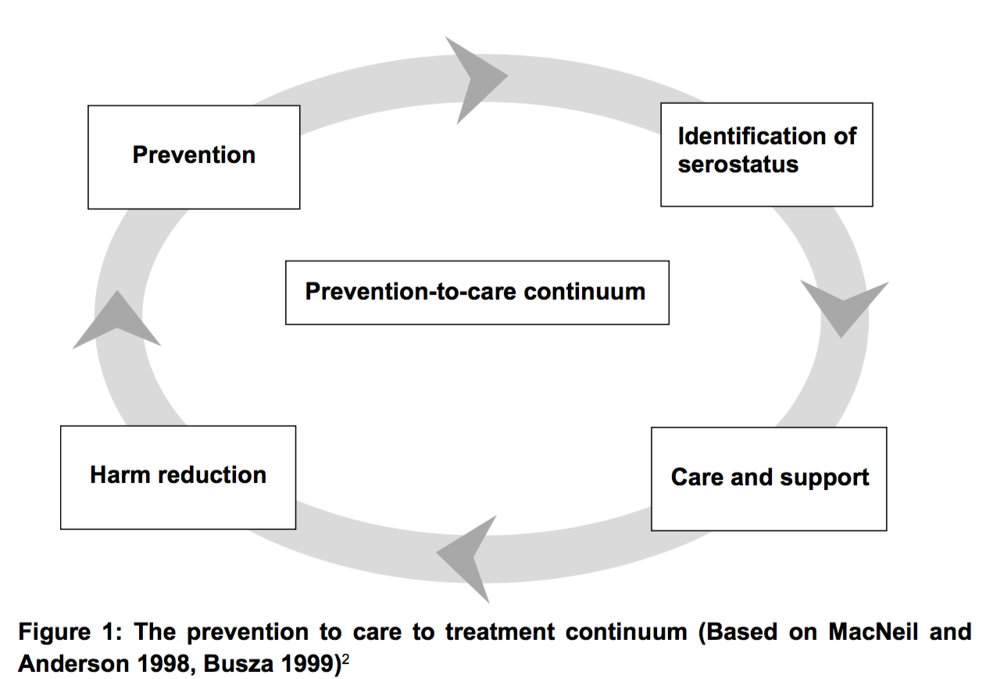
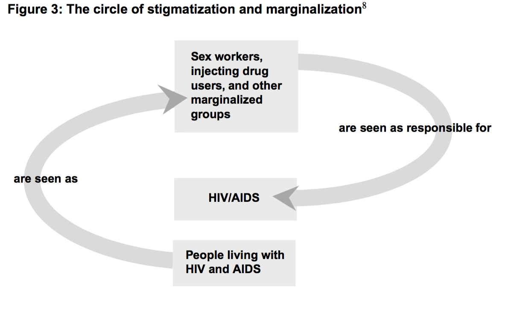

Stigma and Discrimination are major barriers
Many factors (lack of understanding, misconceptions, lack of acccess, bad media, incurability, prejudice, fears, taboos, ...)
Stigma = dynamic process of devaluation that 'significantly discredits an individual in the eyes of others'
Discrimination = result of stigma by action or omission
UNAIDS (2000): Discrimination = any form of arbitrary distinction, exclusion, or restriction affecting a person, usually but not only by virtue of an inherent personal characteristic or perceived belonging to a particular group, irrespective of wheter or not there is any justification for these measures.
Entry points:
Prevention of stigma
Challenge discrimination
Human rights
1) Summarize background and key players
2) Try to classify the "Actions Taken" into different categories
3) Summarize outcomes
4) Do you think you could apply any of these strategies in Bard/your community for people living with HIV?
5) Do you think they can be adapted for other forms of stigma/discrmination?
Integrated care + solidarity
Promote involvement of people living with HIV
Mobilization of leaders
Participatory training
Alliance building
Media and awareness
Supportive and confidential spaces
Counseling (including children and teenagers)
Rights-based policy and legislation
Challenge discrimination
Promoting access to treatment
--------